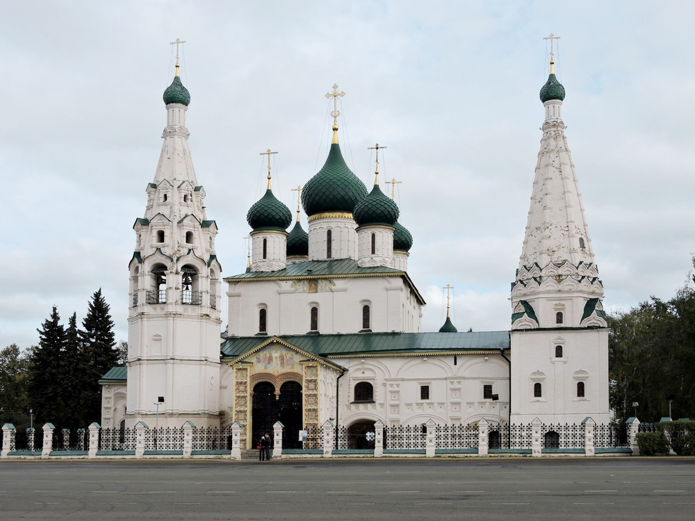

История основания
Город Ярославль — старинный волжский город, широко известный своими замечательными памятниками зодчества, сокровищница древнерусского искусства. Многовековая история г. Ярославля начинается с основания в 1010 году ростовским князем Ярославом Мудрым города-крепости на Стрелке — месте слияния рек Волги и Которосли.
>
Достопримечательности
Особенно хороша и нарядна церковь Ильи Пророка, расположенная в центре города на Ильинской площади. Внутри храм поражает многоцветностью и пышностью убранства. Стенописи церкви выполнены в 1680-1681 годах костромскими и ярославскими мастерами во главе с Гурием Никитиным и Силой Савиным. Золоченый резной иконостас выполнен в стиле барокко и является замечательным произведением декоративного искусства. В убранстве церкви Ильи Пророка есть и многоцветные изразцы. Это далеко не полное описание произведений живописи и декоративно-прикладного искусства церкви Ильи Пророка, являющегося одним из филиалов историко-архитектурного музея-заповедника Ярославля. Ярославский музей-заповедник находится на территории Спасо-Преображенского монастыря.
